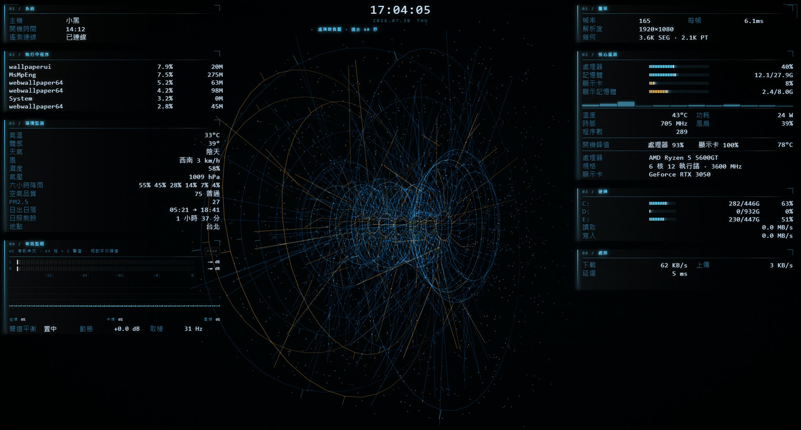

核心遙測
CPU、記憶體、GPU、VRAM、溫度、功耗、時脈、風扇與各邏輯核心的獨立負載。
一張會讀懂你電腦狀態的全息 HUD 動態桌布。中央線框渦輪、硬體遙測、環境監測與音訊頻譜，都在眼前即時運算。
直接下載：完整遙測 agent 與安裝器 · Steam：Wallpaper Engine 一鍵訂閱

很多科幻 HUD 桌布的數字只是裝飾；SIGNAL FIELD 的每一格都有實際來源。它用程序化生成的 WebGL2 線框引擎當核心，將電腦的即時狀態整合成安靜、細緻的桌面監測介面。
CPU、記憶體、GPU、VRAM、溫度、功耗、時脈、風扇與各邏輯核心的獨立負載。
硬碟用量與即時讀寫、網路上下行和延遲、前六名 CPU 程序、60 秒負載走勢。
天氣、體感、風、濕度、空品、PM2.5、紫外線、日出日落與行事曆。
原生音訊 API 驅動的左右聲道電平、48 格頻譜、三頻能量與全息體呼吸效果。
8000+ 條即時繪製線段、掃描平面、滑鼠視差與五組配色，不用影片或 3D 模型檔。
GPU 過熱、硬碟不足、記憶體過高或延遲異常時才會亮起警戒，不做無意義的假警報。
| 系統 | Windows 10 / 11、Wallpaper Engine，以及支援 WebGL2 的顯示卡。 |
| 遙測 agent | 完整即時硬體 HUD 需要 PowerShell 7；安裝器會先詢問才安裝。 |
| 顯示卡 | NVIDIA 可顯示最完整的 GPU 溫度、功耗、時脈、風扇與 VRAM；AMD／Intel 仍可使用，但部分欄位可能無數據。 |
| 網路 | 天氣與空氣品質使用 Open-Meteo；自動定位使用 ipapi.co，也可在桌布設定自行填入座標。 |
| 資料安全 | 遙測 agent 只監聽本機 127.0.0.1，只讀取這台電腦的資料，不會將硬體或程序資料上傳。 |
Steam Workshop 能直接安裝桌布，但基於 Windows 安全機制，不能自行啟動本機程式。第一次想顯示 CPU、GPU、硬碟、網路與程序資料時，下載一次本機 agent 即可；它會在登入時自動啟動，之後 Steam 訂閱版與完整下載版都會自動連線。
解壓後雙擊 INSTALL-AGENT.cmd · 僅監聽本機 127.0.0.1 · 不會覆蓋 Steam 桌布